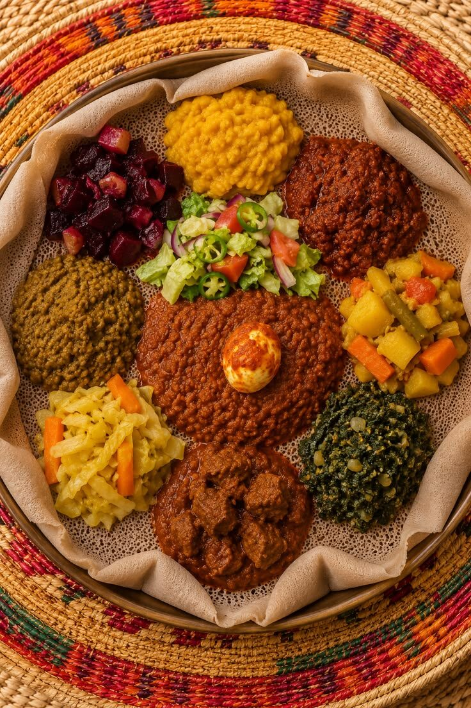
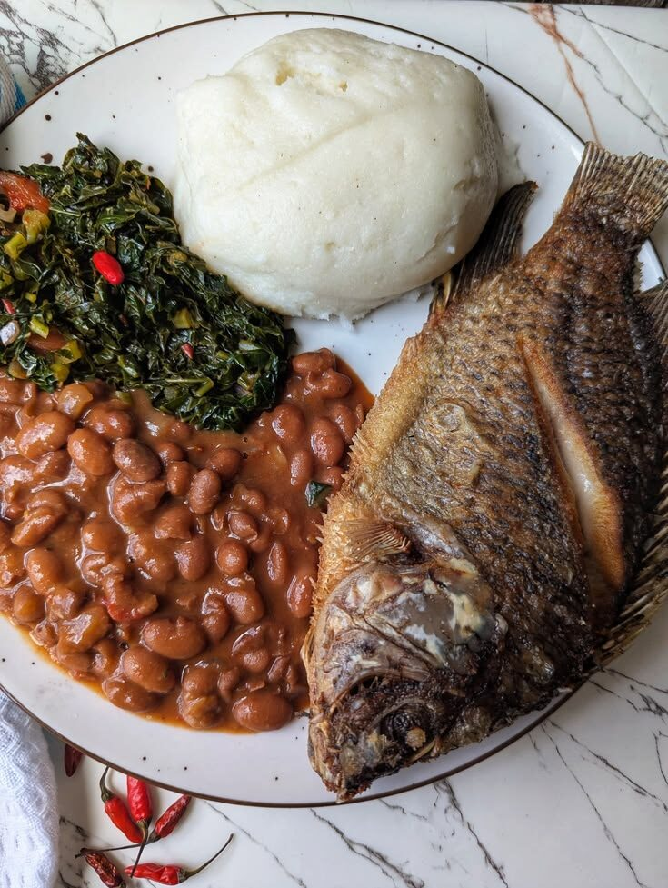
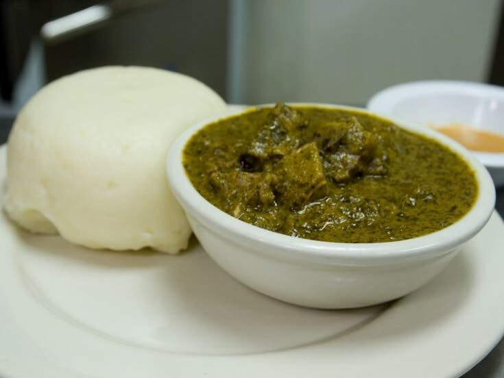

Food culture
Where: Ethiopia, Eritrea, Kenya, Tanzania, Uganda, Rwanda, Burundi and Somalia.
Sharing is central: injera is eaten from one big platter, ugali is rolled by hand, and coffee ceremonies in Ethiopia turn a drink into an hour of conversation.

Staple ingredients
- Teff, maize and sorghum
- Beans, peas and lentils
- Plantain, cassava and sweet potato
- Leafy greens such as cassava leaves
- Goat, beef and fish
Cooking techniques
- Fermenting batter for injera
- Cooking flatbread on a clay griddle (mitad)
- Roasting meat over coals: nyama choma
- Steaming plantains in banana leaves
- Simmering greens with groundnuts, as in isombe
Signature spices & flavours
- Berbere
- Mitmita
- Cardamom
- Cloves
- Coconut (Swahili coast)
Example dishes

More to explore
- Doro wat (Ethiopian chicken stew)
- Ugali with sukuma wiki
- Nyama choma (Kenyan roast meat)
- Mandazi (sweet fried dough)
Watch: the food of East Africa
Video not loading? Watch on YouTube.